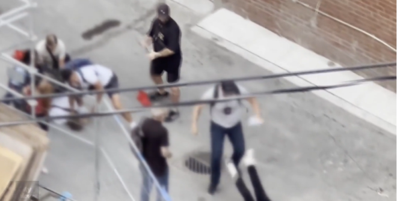
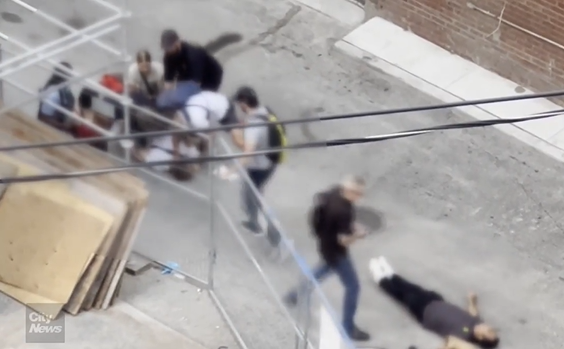
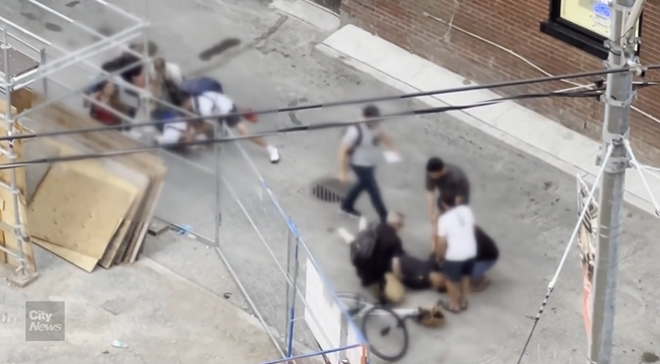
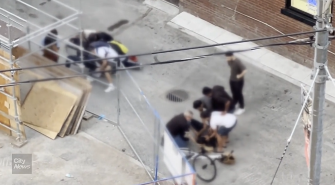

上周末，有媒体人员拍到了发生在多伦多街头的一幕，引发了人们的质疑。几名便衣警察在路边逮捕嫌疑人时，一人凑上前去，被冲过来的一名警察推倒在地，受了重伤。

图源：CityNews
这起事件发生时，被CityNews的工作人员拍下。画面显示，8月3日晚上7点左右，一群便衣警察试图在Dundas Street East和Victoria Street Lane地区的一条小巷中制服一名人员。
在这几名便衣警察执法时，周围一些民众一开始看似不知道发生了什么事，驻足观看或上前询问。
当警察继续制服该人时，一名男子走上前来，将手放在其中一名警察身上，但很快被打走。随后，两名警察出示警徽表明身份。
这时，又一名便衣警察冲进来，将该男子猛地一下推倒在地。
该男子的头似乎撞到了水泥地上，其他人立即上前查看他的情况。

图源：CityNews
随后，将该男子推倒在地的警察走近查看，然后向其他警察打手势，似乎在提供解释。

图源：CityNews
完整经过请点击下方视频查看：
对于被拍到的这段画面，安省特别调查组回应表示，他们正在调查此事，并补充说“该男子被紧急送往医院，在医院被诊断为重伤。”

图源：CityNews
多伦多警方称，他们于8月4日凌晨向特别调查组通报了此事，但由于他们目前正在调查，因此无法进一步置评。